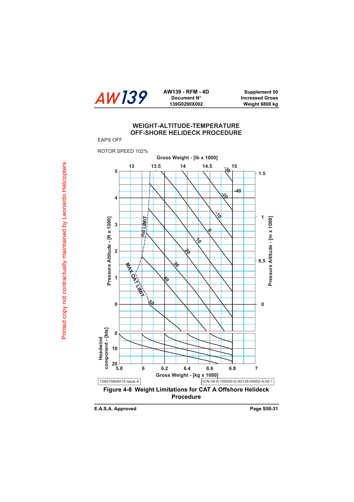

Esta sandbox foi limpa para usar exclusivamente a Figure 4-8 na page-08 / S50-31. Não há referência visual ao Standard nem ao EAPS ON nesta build.

Gráfico em uso: Figure 4-8 — Weight Limitations for CAT A Offshore Helideck Procedure, EAPS OFF.
Página: S50-31 / docs/page-08.png
Fonte: Leonardo AW139 Rotorcraft Flight Manual (RFM), Edition 2, Revision 32.